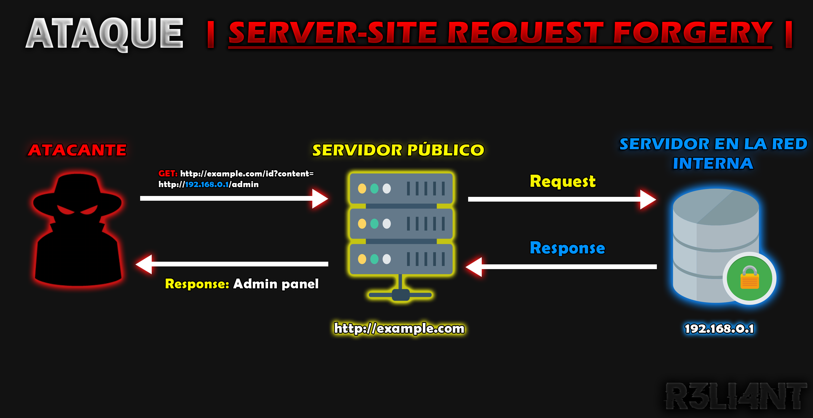

# VULNERABILIDAD SSRF | Server-side Request Forgery |
La vulnerabilidad SSRF (Server-Side Request Forgery) ocurre en aplicaciones web cuando un atacante puede manipular el servidor para realizar solicitudes a otros servidores internos o externos, a menudo con privilegios que el atacante no tiene. Este tipo de ataque puede llevar a la exposición de información interna, escaneo de puertos internos, y en algunos casos, ejecución de comandos en el servidor.
Requisitos previos para un Ataque SSRF
Para explotar una vulnerabilidad SSRF (Server-Side Request Forgery), deben cumplirse varias condiciones esenciales:
-
Encontrar un punto de entrada: El atacante debe identificar una funcionalidad en la aplicación que permita enviar solicitudes a ubicaciones específicas. Ejemplos incluyen formularios de carga de URL, servicios de obtención de recursos remotos, o API que procesan URLs suministradas por el usuario. -
Entender el contexto de la solicitud: El atacante debe comprender cómo se manejan y procesan las solicitudes en el servidor, incluyendo cabeceras, métodos HTTP, y cualquier mecanismo de autenticación. -
Acceso a recursos iternos: En muchos casos, los ataques SSRF son efectivos porque el servidor tiene acceso a recursos internos que no son directamente accesibles desde el exterior. Estos pueden incluir servicios internos, bases de datos, o incluso sistemas de administración interna.
Ejemplos de Acciones Maliciosas mediante SSRF
-
Exfiltración de datos: Obtener datos sensibles almacenados en servidores internos, como configuraciones de bases de datos, credenciales, o información privada de usuarios. -
Escaneo de puertos: Utilizar la capacidad del servidor para escanear la red interna y descubrir servicios que están en ejecución, potencialmente exponiendo vulnerabilidades adicionales. -
Desencadenar acciones en otros servicios: Enviar solicitudes que desencadenen acciones en otros servicios internos, como iniciar procesos, modificar datos, o incluso ejecutar comandos. -
Acceso a metadatos de nube: En entornos de nube, los ataques SSRF pueden ser utilizados para acceder a metadatos de instancia, permitiendo la obtención de credenciales y otra información crítica.
En resumen:
Para que un ataque SSRF sea posible, el atacante debe identificar un punto de entrada que permita el envío de solicitudes, comprender el contexto de cómo se manejan estas solicitudes en el servidor, y apuntar a recursos internos o sensibles que pueden ser explotados a través de la capacidad del servidor para comunicarse con otros sistemas.

Resumen del Proceso:
-
1)- El atacante envía una solicitud maliciosa al servidor público.
-
2)- El servidor público procesa la solicitud y extrae la URL interna.
-
3)- El servidor público envía una solicitud a la URL interna en la red interna.
-
4)- El servidor en la red interna responde con el contenido solicitado.
-
5)- El servidor público reenvía la respuesta al atacante, quien recibe la información sensible del servidor interno.
Este esquema muestra cómo una vulnerabilidad SSRF permite a un atacante acceder a recursos internos a través de un servidor público que actúa como intermediario.
# EXPLOTAR SSRF | Burp Suite
En el siguiente ejemplo, utilizaré los laboratorios de PortSwigger para explotar la vulnerabilidad SSRF mediante la herramienta Burp Suite. Estos laboratorios son gratuitos y solo requieren la creación de una cuenta: https://portswigger.net/web-security/ssrf.
El primer laboratorio nos explica que tiene una función para comprobar el stock de un producto, el cual hace una petición al sistema interno. Para resolverlo tenemos que cambiar la URL de la comprobación del stock para acceder al panel de administración y eliminar el usuario Carlos.
Lo primero será configurar un servidor proxy para que registre todo el tráfico que se genere en el navegador web, para ello debemos ejecutar Burp Suite e ir a la pestaña de Proxy -> Options y verificar si tenemos el proxy como se muestra a continuación:
Luego en el navegador, por ejemplo Firefox ir a Preferencias -> Avanzadas -> Proxy de Red -> Configuración -> Configuración Manual del Proxy
En Proxy HTTP escribir 127.0.0.1, en Puerto escribir 8080 y tildar el mismo proxy para todo:
Ahora lo que haremos es meternos en cualquier producto.
Buscamos la función de stock y pulsamos en ella.
Desde Burp se interceptará la petición de tipo POST.
Podemos observar que hay un parámetro que se llama stockApi con un valor en formato URL, para que sea legible podemos seleccionarlo y pinchar en URL-decode.
Luego enviamos la petición al Repeater y cambiamos la URL del parámetro stockApi a http://localhosy/admin. De esta forma, estamos enviando una petición al servidor web, el cual realizará una petición interna al localhost del panel de administración, es una petición que se realiza a sí misma, por lo tanto, tiene permiso.
En el Response (Render) podemos ver que estamos en el panel de administración y que tenemos acceso a los usuarios.
Como no es interactivo, lo que debemos de hacer es buscar en el código fuente del Response la palabra "Carlos".
Podemos ver que el enlace para eliminar al usuario Carlos es /admin/delete?username=Carlos. Este valor debe asignarse en el parámetro stockApi y enviarse la petición para que los cambios se realicen.
Si volvemos a acceder al panel de administración, el usuario Carlos ya no aparece, y por lo tanto, el laboratorio estaría finalizado.
El siguiente laboratorio tiene también una función de stock y que realiza una petición al sistema interno. Pero para este caso debemos escanear el rango de la red interna y encontrar en que dirección IP tenemos acceso al panel de administración para luego eliminar el usuario Carlos.
Si accedemos al panel admin desde la aplicación web nos dirá que no se encuentra.
Volveremos a ingresar a un producto y haremos clic en la funcionalidad de stock.
Al capturar la petición con Burp, notamos que es similar, pero se realiza a una IP interna 192.168.0.1 en el puerto 8080. Realizar una petición desde una IP interna está mal, ya que proporciona información al atacante en bandeja.
Enviaremos la petición al Repeater y modificaremos el parámetro de stock para ver si el panel de administración se encuentra en dicha IP http://192.168.0.1:8080/admin.
Nos devuelve un error, por lo tanto, la interfaz de admin no se encuentra en esa IP. Envíamos la petición al Intruder.
Aquí seleccionamos el último dígito de la IP ".1" y le damos en "Add §".
Luego nos dirigimos a la pestaña de Payloads y en tipo lo dejamos en númerico.
En la configuración del payload copiaremos lo siguiente: va a ir desde 1 hasta 254 (todas direcciones IP posibles de una red /24) y que vaya de uno en uno.
Una vez configurado todo, le damos en "Start Attack".
Vemos que se comienzan a enviar las peticiones. Inicialmente, recibimos dos tipos de respuestas: una con un código 400 y otra con un código 500, que no nos son útiles. Para buscar una petición diferente, seleccionamos 'Status' y observamos que hay una que nos devuelve un código 200.
Si pulsamos en ella, podemos ver que se realiza una petición a la 192.168.0.142, y efectivamente, se puede acceder al panel de administración. Al buscar la palabra 'Carlos' en la respuesta, encontraremos el enlace para eliminar el usuario http://192.168.0.142:8080/admin/delete=username=carlos.
Seguidamente volveremos al Reapter y modificamos el parámetro de stockApi con el enlace anterior, luego envíamos dicha request.
Finalmente, si comprobamos el renderizado de la respuesta, podemos ver que el usuario Carlos ha sido eliminado y que el laboratorio se completó exitosamente.
# MITIGAR VULNERABILIDAD SSRF (Server Side Request Forgery)
Cuando se permite que los usuarios ingresen URLs en una aplicación web, existe el riesgo de un ataque SSRF (Server-Side Request Forgery). Este tipo de vulnerabilidad ocurre cuando un atacante puede manipular el servidor para realizar solicitudes a recursos internos o externos no autorizados.
Ejemplo de Código Vulnerable
$ function validUrl(url) {
return url;
}En su forma actual, esta función no realiza ninguna validación real. Por lo tanto, un atacante podría ingresar URLs maliciosas, incluyendo aquellas que apunten a recursos internos (como http://127.0.0.1/admin) o manipular la red a través de dominios que resuelvan a direcciones IP privadas.
Para empezar, es fundamental limitar los protocolos permitidos. Puedes hacer esto usando una expresión regular para asegurarte de que la URL comience con http o https.
$ function validUrl(url) {
return url && /^(http|https):\/\//.test(url);
}Con esta mejora, solo se permiten URLs que comiencen con http:// o https://. Sin embargo, aún es posible que un atacante intente acceder a servicios internos usando URLs como http://127.0.0.1/admin. Para mitigar este riesgo, debes verificar si la URL se dirige a una dirección IP privada. Aquí hay una forma de hacerlo:
$ function validUrl(url) {
return url
&& /^(http|https):\/\//.test(url)
&& !someIpChecker.isPrivate(url);
}Un atacante también puede usar dominios que resuelvan a IPs privadas. Por lo tanto, una solución más robusta es realizar una búsqueda DNS para verificar cómo se resuelve la URL. Esto puede ayudar a identificar y bloquear dominios maliciosos que resuelvan a direcciones IP privadas.
$ function validUrl(url) {
return url
&& /^(http|https):\/\//.test(url)
&& !someIpChecker.isPrivate(url)
&& !someIpChecker.isPrivate(dnsLookup(url));
}Aquí, dnsLookup(url) realiza una búsqueda DNS para obtener la IP a la que se resuelve el dominio y someIpChecker.isPrivate(dnsLookup(url)) verifica si la IP resuelta es privada.
En este fragmento de código, someIpChecker.isPrivate(url) es una función que determina si la URL apunta a una IP privada.
Para mitigar una vulnerabilidad SSRF, considera implementar los siguientes métodos:
-
Deshabilitar Redirecciones: Bloquea o limita las redirecciones HTTP para evitar que los atacantes puedan eludir las validaciones iniciales mediante redirecciones a otros recursos.
-
Usar una Lista Blanca de Dominios: Establece una lista blanca de dominios permitidos para las solicitudes salientes. Solo permite conexiones a dominios explícitamente autorizados.
-
Utilizar Expresiones Regulares: Define un patrón aceptable para las URLs ingresadas usando expresiones regulares. Asegúrate de que las URLs comiencen con http o https y cumplan con el formato esperado.
Créditos: Newhouse C. (28/04/2021). Mitigation of SSRF vulnerabilities